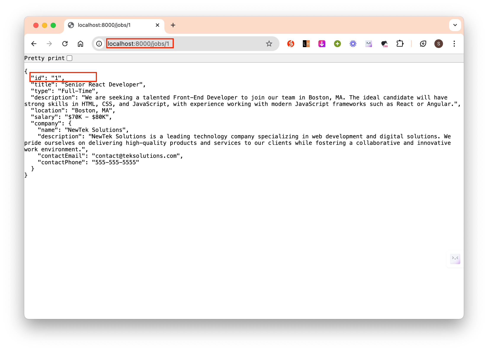

React Crash Course Part 2/3
Lesson 3
To start the frontend server, we run
npm run dev. This works because we havedevunderscript.
The structure for single page application is the similar for all frameworks – the single page is index.html.
In index.html, we have a div element of id=“root”, this is the main part where our application will be placed in. (See below image - left)
In the div, we are including the src/main.jsx file as a module. This is the application’s entrypoint.
- In below image (right), we can see that we are selecting the HTML element by id, and we call render. In the below example, we are rendering
</App>component. This comes from App.jsx.
- We can render anything we want, eg if we change this to H1.

- In below image (right), we can see that we are selecting the HTML element by id, and we call render. In the below example, we are rendering
Notice that we are importing the stylesheet on line 3 in right image
import './index.css'The
<StrictMode>is a wrapper component that will check for potential problem in your app. Eg deprecated method, unsafe lifecycle methods, legacy api usage etc.The react+vite boilerplate contains 2 css (App.css and index.css).
The App.jsx is the main component and basically this is all the stuff that gets rendered.
Every react component will return JSX. JSX is a html-like syntax.

You can only return a single html-like element. If you want to return multiple html elements, you can just wrap them up inside a div, and return the parent div, or just use a fragment if you don’t want an actual div (essentially just wrap all of your html elements inside an empty tag
<></>)We can use javascript above the return statement.

We can also make reference to javascript expressions and do loops (essentially do anything using javascript - except if statement – because it has to be a 1 line expression). Anytime we want to refer to something dynamic (from javascript), we need to use curly braces.

- The above code will actually give a warning in console tool (to open the dev tool: right click anywhere –> inspect –> console tab):
 This is because anytime we use list items, we need to give each item a unique id.
This is because anytime we use list items, we need to give each item a unique id. 
- The above code will actually give a warning in console tool (to open the dev tool: right click anywhere –> inspect –> console tab):
We can only use javascript 1 liner inside the html returned element, so what we can do is using tertary conditional if we want to use if conditional ie {condition statement ? if true : if false}
jsx is what HTML would be if it had logic.
We can also include inline styles in jsx file.

You can store your components inside ./src/components.
A component can have a .js or .jsx extension for javascript; and .ts or .tsx for typescript.

To use the new component in your app.js, you need to import it. In app.js, on the top of the file, we import with
import Navbar from './components/Navbar'To use the imported components, we use
<Navbar />.
If we checked the components tab in dev tools, we can see the new component we’ve added. (To add the components tab in the dev tools: add this chrome extension https://chromewebstore.google.com/detail/react-developer-tools/fmkadmapgofadopljbjfkapdkoienihi?hl=ja)

The convention is to name Javascript components with first letter capitalized and all html elements with all lowercase letters.
To import image from /assets/images folder and use it in our components:

We can pass props to a components. These are like attributes.
Also another way to write is to destructure props –> {attribute1, attibuteN}
Example of props with default values.
How to use component as wrapper. So in this example, we can see how we can use props not only to change the content but also the styling.
Looping through array in javascript and outputing jsx component

States
Component states: relates to a single component
Global states: relates to the entire app, can pass down to components
Here is an example of component state:
To install additional packages for working with icons and font-awesome:
npm i react-iconsTo use the installed font, we need to import it. To import it, we write on top of the component .jsx file where we want to use it:
import {} from 'react-icons/fa'. This example shows how we can import font-awesome from react-icons. We import any font-awesome components we want. After imported, these icons act like a component.Using React on its own, we can not add separate pages. This is the differences between library and framework (React is a library).
A workaround to add separate pages when using React is to use React Router. This is the official router for React, but it is a separate package, so we need to install it. To install it, use
npm i react-router-dom.This is how to create seperate pages using
react-router-dom.Each of the pages you want to add to your webpage is a component, just like each of your UI is a component. It is a good idea to save them in separate folder and not together with your UI component. You may see people save them in /src/screens, /src/pages.
Anything we imported is a component.
Here is how to use route to create ‘connection’ to separate pages.
Note that here we set up layout using the main
<Route path='/' element={ <MainLayout/> }>...</Route>- This will always show on all the components nested inside the main
<Route>.
- This will always show on all the components nested inside the main
Instead of using
<a href=""></a>, use<Link to=""></Link>. Because it loads faster. We have to import Link first from usingimport { Link } from 'react-router-dom'.If we want the link to the pages be highlighted when user clicked on the page, we can use NavLink in place of Link. They work the same. We then need to create a function to set different class to active element and inactive element (so the active ones will be highlighted)

Adding route to invalid url with wildcard *

To test out getting data from backend into your frontend, you could use
json-serverlibray from npm (https://www.npmjs.com/package/json-server). This library lets you create mock api. You can send Get, Post, Put, Patch and Delete requests. It can use any resource you want from .json file. It runs on a separate server than your frontend react app, and it fetches data from the json file you provided. To installjson-serveras a dev dependencies:npm i -D json-serverTo point the json-server to a json file we use the command
json-server --watch src/file-to-point-to.json --port 8000. Here we specify the port we want the server to use.
In the example below, we specify the command to start the json-server under “scripts” in package.json. So we can directly run the json-server using the command
npm run serverdirectly in the terminal in the root directory.Once we have the json-server running, we can get specific output from the json-server by refering to the id. This output is the same just as if we’ve build a REST API and getting through /get request. We can also do a post request to add data to the actual json file.
This is how we would do to directly get data from json 
We can fetch data via api and save it in variable using useState and useEffect.
useEffecttakes a function and a dependency array. The syntax is:useEffect( () => {}, [] ). We define the function in the() => {}portion and the dependency array as the second argument – in the[]portion.With the json-server, we can also limit the returned response from the get request by adding
?_limit=3(eg to limit to only 3 returned output) after the http link. Eg below is the working code for useEffect()
useEffect(() => {
const fetchJobs = async () => {
try {
const res = await fetch('http://localhost:8000/jobs?_limit=3'); // send get request
const data = await res.json(); // get the data
setJobs(data); // this will put the data we fetched into the jobs variable
} catch (error) {
console.log('Error fetching data', error);
} finally {
// whatever we put in finally will run eitherway
setLoading(false);
}
}
fetchJobs(); // run the function we defined above
}, []);- To show spinner even page is loading, we could download the react spinner library using command
npm i react-spinners - To only show 3 output data for the homepage, otherwise show all data

- How to set proxy: